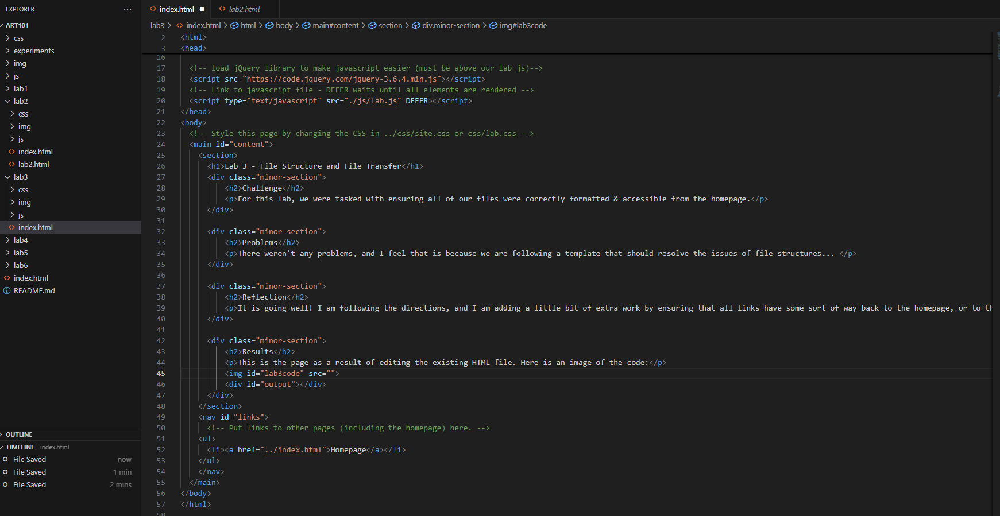

Lab 3 - File Structure and File Transfer
Challenge
For this lab, we were tasked with ensuring all of our files were correctly formatted & accessible from the homepage.
Problems
There weren't any problems, and I feel that is because we are following a template that should resolve the issues of file structures...
Reflection
It is going well! I am following the directions, and I am adding a little bit of extra work by ensuring that all links have some sort of way back to the homepage, or to the sheet associated with that lab (see lab 2).
Results
This is the page as a result of editing the existing HTML file. Here is an image of the code:
